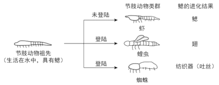

2018年北京市中考生物试题 · 选择题 第11、12、13、14、15题
11. 下列获得新植株的方式不属于无性生殖的是
A. 小麦种子繁殖B. 苹果和梨嫁接
C. 马铃薯块茎繁殖D. 月季枝条扦插
12. 下列动物行为属于学习行为的是
A. 鹦鹉学舌B. 喜鹊筑巢C. 孔雀开屏D. 雄鸡报晓
13. 节肢动物鳃的进化如下图。下列叙述不正确的是

A. 鰓进化出的结构是不同的
B. 鰓的进化有利于适应生存环境
C. 鰓的进化与遗传、变异无关
D. 鰓 进化是自然选择的结果
进化是自然选择的结果
14. 下列防治流感的做法不正确的是
A. 患流感后一定要大量服用抗生素
B. 患流感后尽量少去公共场所
C. 患者在打喷嚏时应掩住口鼻
D. 注射流感疫苗有一定的预防作用
15. 小林在学校的综合实践活动中制作下列食品时，利用的主要微生物不正确的是
A. 面包一酵母菌B. 酸奶一乳酸菌
C. 食醋一醋酸(杆)菌D. 泡菜—霉菌